LAB1 - 初期開発
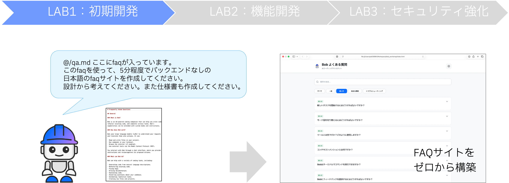
このラボでは、IBM Bobを使って、手元で開けるシンプルなFAQサイトを作ることを目指します。
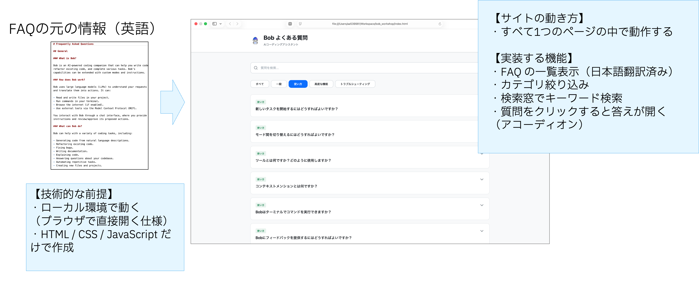
| 項目 | 内容 |
|---|---|
| サイトの動き方 | すべて1つのページの中で動作する |
| 実装する機能 | ・検索窓でキーワード検索 ・カテゴリ絞り込み ・FAQの一覧表示（日本語翻訳済み） ・質問をクリックすると答えが開く（アコーディオン） |
| 技術スタック | ・ローカル環境で動く（ブラウザで直接開く仕様） ・HTML / CSS / JavaScript だけで作成 |
Prompt の入力と計画の生成
1. Prompt のコピーと実行
PROMPT.md を開き、記載されている文章をコピーします。
ユーザーのアクション:
PROMPT.mdファイルを開く- 内容をすべてコピー
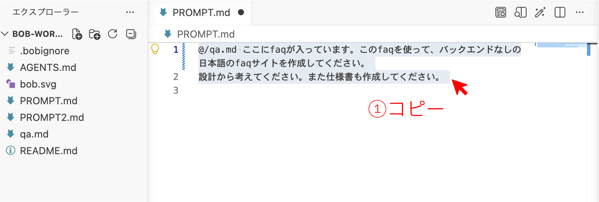
コピーした Prompt をチャット欄に貼り付け、Plan モードを選択して、右下の実行ボタンを押します。
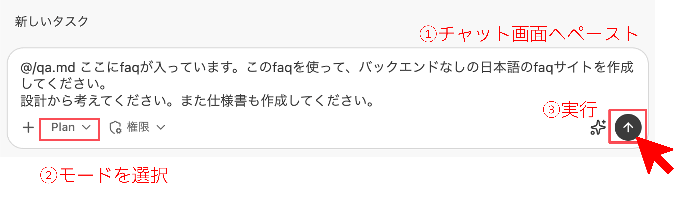
2. 計画スキルの起動と自動調査
Plan モードで実行を開始すると、Bob が計画作成用のスキルを自動でロードします。
Bob のアクション:
-
スキルのロード
「スキルcreate-planを使用しました」というメッセージが表示され、計画作成用のワークフローが読み込まれます。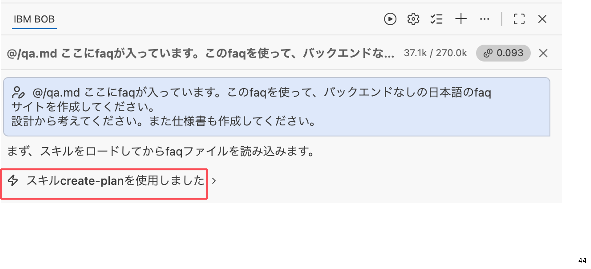
-
プロジェクト構成の自動調査
Bob がプロジェクト内のフォルダ・ファイル構造を自律的に調査します。この間、ユーザー操作は不要です。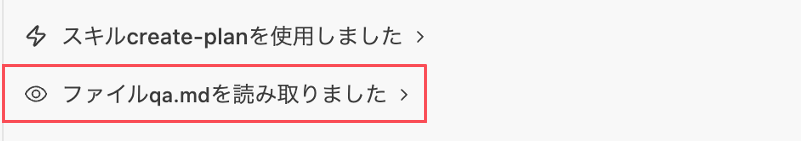
3. 要件の整理
調査が完了すると、Bob が要件確認のための質問を提示します。ここでは技術スタックの選択肢（4 択）が表示されるので、「シンプルな HTML/CSS/JS 単一ファイル」 をクリックします。
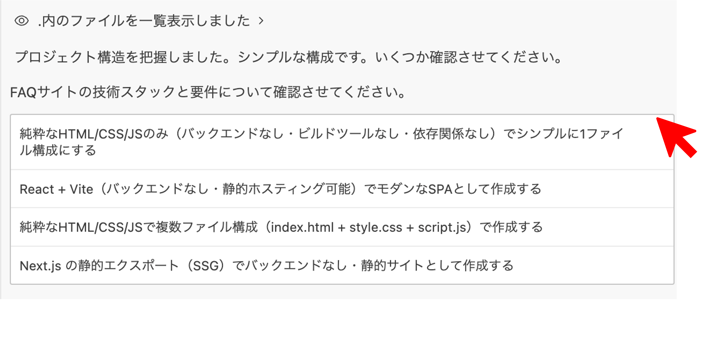
技術スタック選択後、デザインスタイルの選択肢（3 択）が表示されます。お好きなデザインをクリックします。
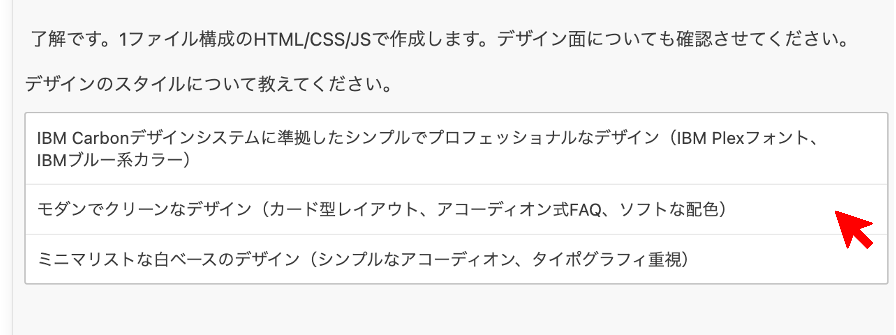
注意
生成AIの生成結果によって、尋ねられる要件の内容や順序は変わることがあります。
4. 仕様書の作成
要件が揃うと、Bob が specs/ フォルダに 仕様書 と 設計書 の2ファイルを自動生成します。この間、ユーザー操作は不要です。
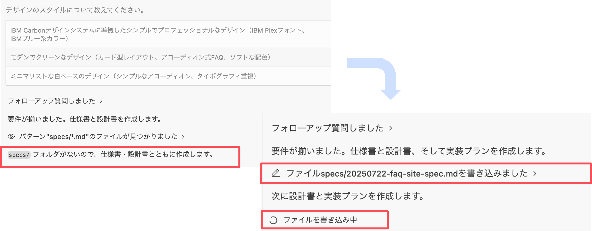
5. 仕様書の確認
1つ目のドキュメント（仕様書）が生成されたら、内容を確認します。
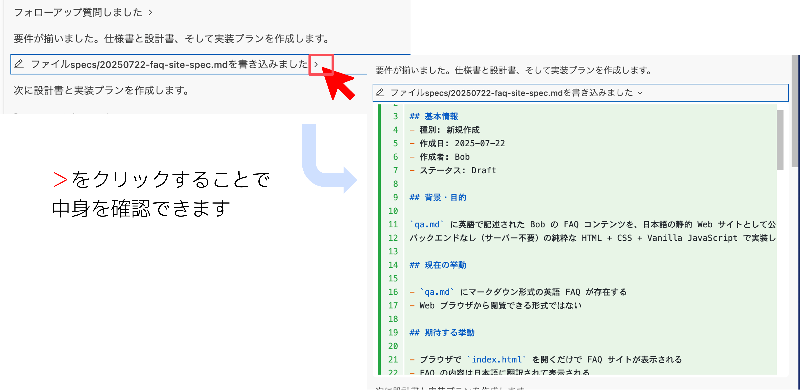
Markdown プレビューでの表示:
エディタ上部のツールバーにある虫眼鏡ボタンをクリックすると、仕様書を Markdown プレビュー形式で表示できます。
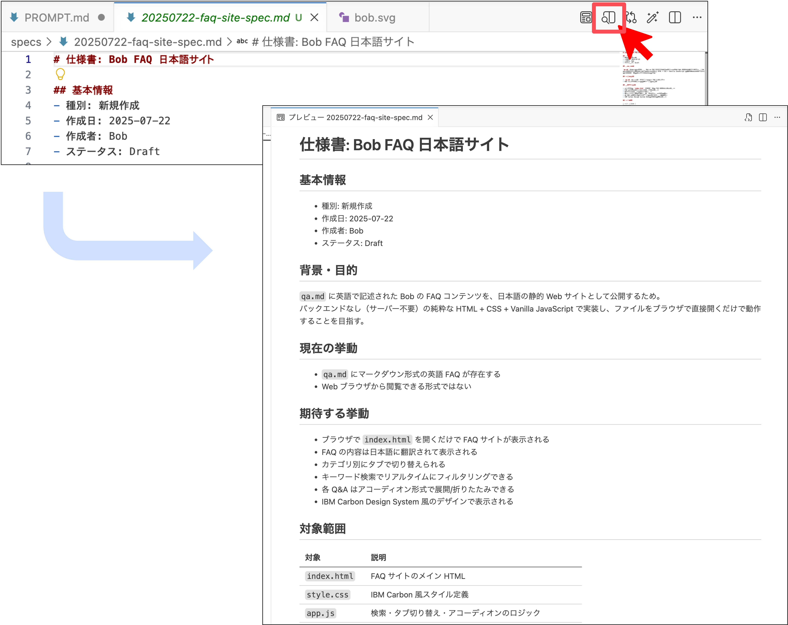
6. 設計書の確認
続いて Bob のチャットパネルにアーキテクチャ図が表示されるので、内容を確認します。
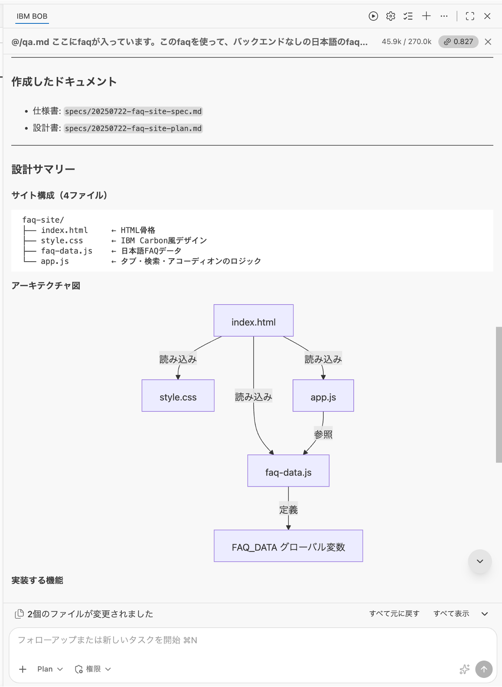
Bob からの確認事項と実装ステップを確認し、問題がなければチャット入力欄にメッセージを送信して実装フェーズに移行します。
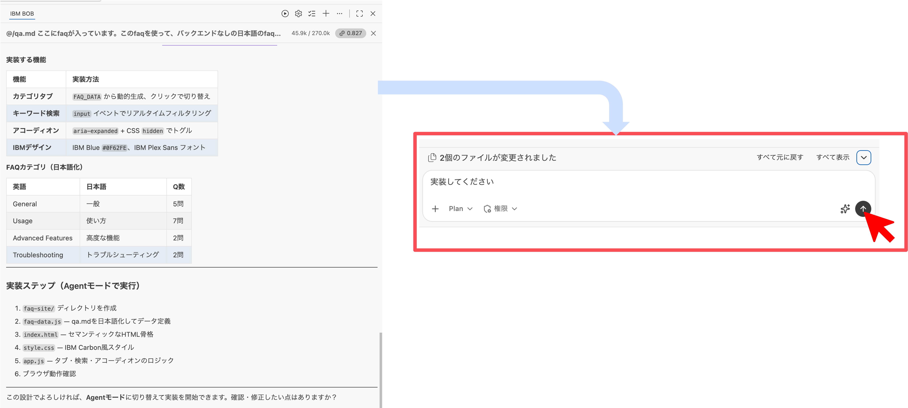
コードの生成
メッセージ送信後、モードが Agent モード に切り替わったことを確認し、Bob に実装を進めてもらいます。
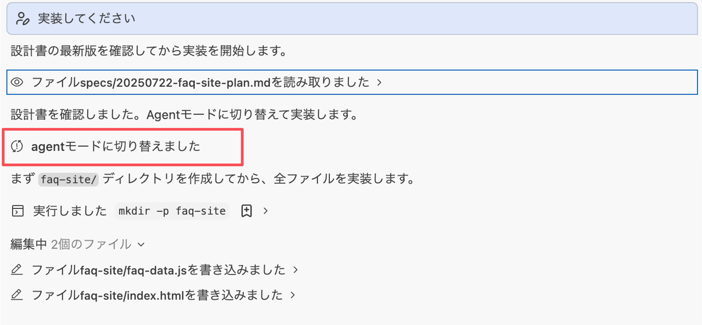
実装中は 3 つのパネルが並行して動き、進捗が可視化されます。
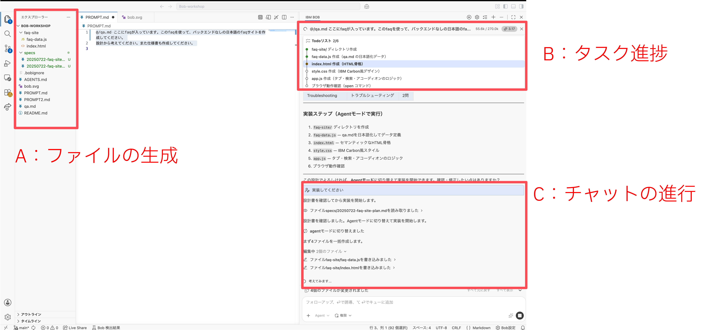
サイトのテスト
1. 作成したサイトを開く
faq.html の生成が完了すると、Bob が「ブラウザで HTML ファイルを開きますか？」と提案してきます。ここでは 「一度だけ承認」 をクリックします。
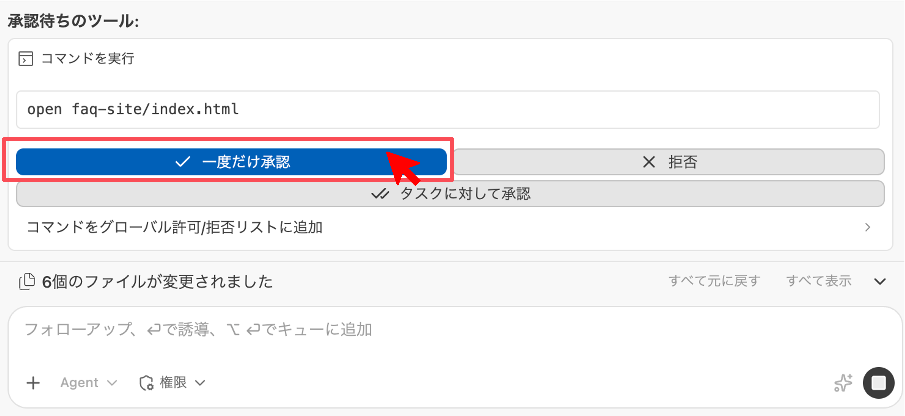
注意
Bob からの提案がない場合は、チャット欄に「作成したサイトをブラウザで確認したい」と伝えてください。
2. サイト機能の確認
FAQ サイトが自動で開くので、以下の項目を実際に操作して動作確認します。
アコーディオン機能の確認:
質問部分をクリックし、回答が展開・折りたたみされることを確認します。
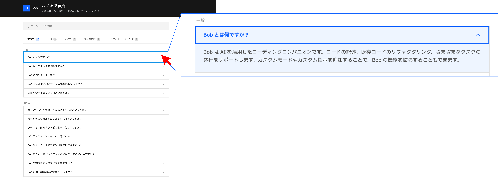
検索機能の確認:
検索ボックスにキーワードを入力し、該当する FAQ に絞り込まれることを確認します。
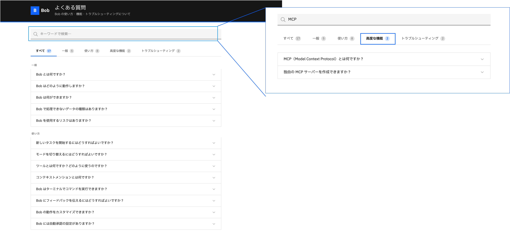
Bob 側での結果反映:
Bob の画面に戻ると、テスト（検証）結果を踏まえてドキュメントが自動更新されます。
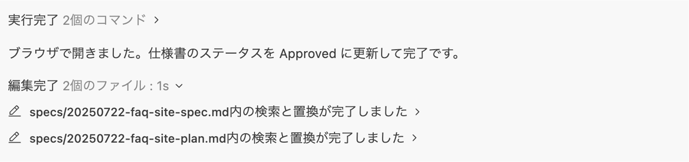
注意
動作に問題がある場合は、Bob に具体的なエラー内容を伝えて修正を依頼してください。
LAB1 の完了
検証まで完了すると、タスクステータスが 「すべてのタスクが完了しました！」 の緑バッジに変わり、変更内容のテーブルが生成されます。これらが表示されれば LAB1 は完了です。
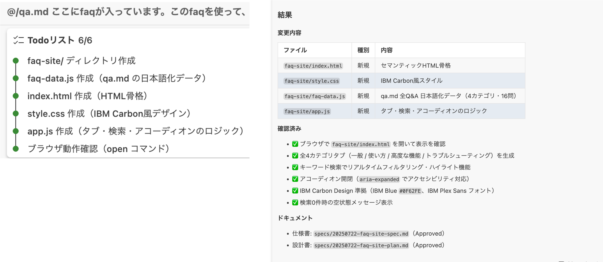
完了条件:
- FAQ サイトが正常に表示される
- 検索機能が動作する
- カテゴリ絞り込みが動作する
- アコーディオン機能が動作する
- 日本語翻訳が正しく表示される
すべての項目が完了したら、LAB2 に進んでください。
+α: Bobcoin 消費量の確認
設定画面から、今回のラボで消費した Bobcoin の量を確認できます。
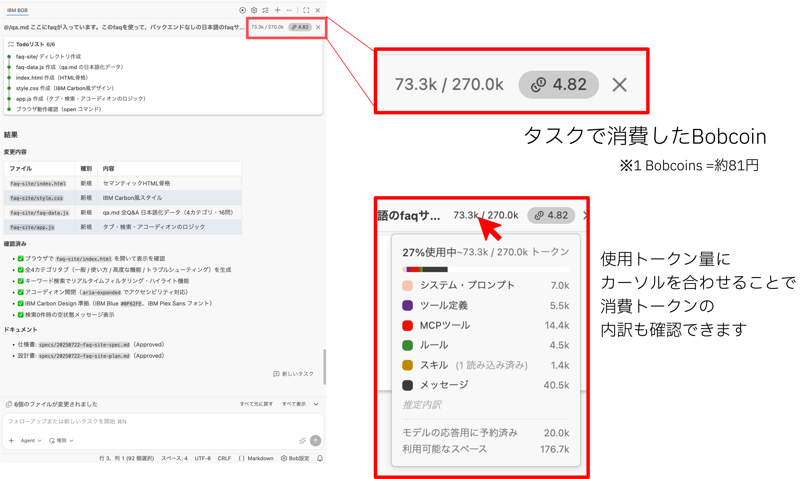
前へ: IBM Bobの画面構成と基本操作 | 次へ: LAB2 - 機能開発